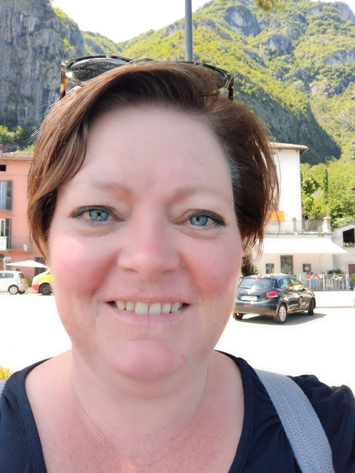

Over mij
 Nou vooruit, een klein stukje voorstellen dan!
Ik ben Astrid en ben op 1 september begonnen met de opleiding Web Development omdat ik ontzettend
nieuwsgierig ben of dit iets voor mij is. Ik hou van puzzelen en ik ben best creatief, het lijken me
prima talenten om in te zetten bij dit werk ;).
Oud? Zeker niet! Ik ben de vijftig net gepasseerd!
Ik ben zeer gelukkig getrouwd (al ruim 26 jaar!) en samen hebben we 2 studerende kinderen en een
práchtige, lieve hond Max.
We gaan graag naar Italië op vakantie en omdat ik de taal zo prachtig vind, ben ik deze taal aan het
leren.